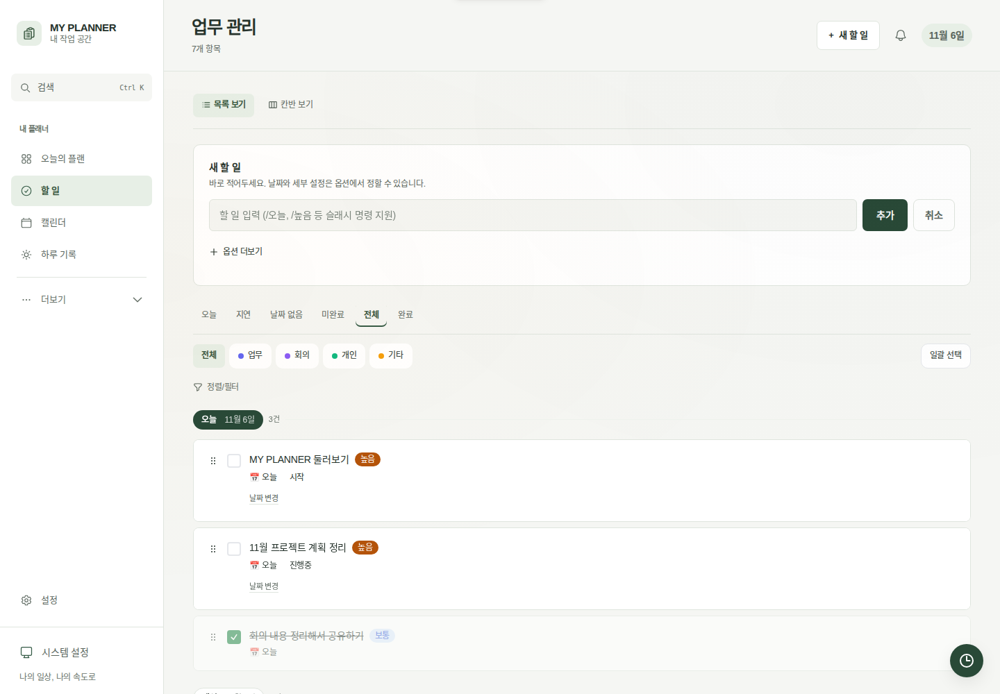
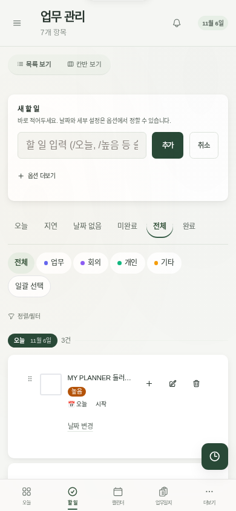

IV · 서비스 개발·운영연구 10 / 14 · 개인 프로젝트 · 웹 개발
개인·공유 플래너 웹 개발과 기능 개선
초록
FastAPI·Jinja2로 할 일·캘린더·업무일지 화면과 API를 만들고 HTMX 부분 갱신을 연결했다. 개인·공유용 JM/My는 공통 모듈을 사용하되 DB를 분리했다. 날짜 없는 할 일을 오늘·내일·지정일로 옮기고 최근 변경을 되돌리는 기능을 추가했으며, 저장된 날짜가 바뀌면 요청을 거절해 다른 화면의 변경을 보존했다. 칸반 이동 후 메뉴가 사라지는 문제와 통계 차트 초기화 순서도 수정했다. 예시 데이터로 PC·모바일 기능을 확인하고 My 배포 후 기존 29개 테이블의 행·값이 유지됨을 대조한 웹 개발 사례다.
주요어 웹 개발 · FastAPI · HTMX · 입력 보존 · 반응형 화면
01연구 문제와 범위
원문 대조 · 공개 예시 화면·개발 범위·검증 조건 확인
연구·개발 목적
할 일·일정·업무일지를 웹에서 관리하고, 화면을 부분 갱신하는 과정에서도 입력과 기존 데이터를 보존한다. [2] [3]
이 사례에서 다루는 문제
할 일과 일정을 웹에서 편집하면서, 부분 갱신 오류와 다른 화면의 변경으로부터 사용자 입력을 어떻게 보존했는가?
문서에 기재된 목적과 수행 내용을 바탕으로 질문을 요약했습니다. 원문의 직접 인용은 아닙니다.
| 구분 | 내용과 근거 |
|---|---|
| 서비스 | 개인·공유 용도로 나눈 JM/My 웹앱. 서버 렌더링·부분 갱신·변경 알림을 연결했다. [1] [3] |
| 개발 범위 | 화면·API·DB 처리와 날짜 변경·되돌리기, 칸반·통계 화면의 오류 수정. [3] |
| 공개 화면 | 격리 환경의 예시 데이터로 촬영한 PC·모바일 화면. 실제 사용자 일정과 업무일지는 제외했다. [2] |
| 검증 환경 | 기능은 격리 DB에서 확인하고 My 배포 후에는 기존 데이터 보존·로그인 화면·접근 제한·정적 파일을 확인했다. [3] |
| 성과 범위 | 기능 동작과 데이터 보존을 확인했다. 사용자 수·업무시간 절감·일정 준수 효과는 측정하지 않았다. [3] |
02데이터와 분석 단위
| 자료·기준 | 내용과 분석 범위 |
|---|---|
| 서비스 구성 | 개인·공유 용도의 JM/My. 공통 코드·정적 파일은 재사용하고 인스턴스별 SQLite DB는 분리. |
| 처리 단위 | 할 일·일정·업무일지와 프로필별 데이터. 날짜 변경은 해당 프로필의 미완료 할 일에 한정. |
| 화면 확인 | 1440px PC·390px 모바일, 밝은 모드·다크 모드. 예시 프로필·격리 DB에서 확인. |
| 공개 자료 | PC·모바일 화면 이미지와 개발·검증 범위 JSON. 개인 일정·업무 기록·인증정보 제외. |
자료의 근거
화면은 예시 데이터이며, 기능·배포 확인 결과는 2026.11.06 시점에 한정한다.
03분석·개발 방법
- 01화면·API 연결
- 02날짜 변경·충돌 검사
- 03부분 갱신 오류 수정
- 04격리 검증·배포 후 대조
서버 렌더링과 HTMX 부분 갱신으로 화면을 구성하고, 날짜 변경에는 기존 값 비교와 트랜잭션을 적용했다. 동작 확인용 DB와 운영 DB를 구분해 검증했다.
웹 화면과 API 연결
FastAPI·Jinja2로 화면을 제공하고 HTMX로 목록·폼을 부분 갱신했다. JavaScript로 칸반 이동·날짜 대화상자를 처리하고 SSE로 변경을 알렸다.
날짜 변경과 입력 보존
오늘·내일·직접 지정과 되돌리기를 구현했다. expected_due_date가 현재 값과 다르면 409로 거절한다. 날짜와 변경 이력을 같은 트랜잭션에 저장하며 이력 저장 실패도 되돌린다.
부분 갱신 오류 추적
칸반 부분 응답이 body를 교체해 메뉴가 사라지는 원인을 확인했다. My에서는 #mainContent만 바꾸도록 했다. 통계 차트는 Chart.js 로딩 이후에 초기화하도록 보완했다.
기능과 배포 결과 분리 검증
예시 DB로 저장·실패·충돌·되돌리기를 확인했다. My 배포 후에는 백업과 데이터 대조, 로그인 화면·접근 제한·정적 파일의 반영 여부를 확인했다.
04결과와 검증
| 평가·결과 항목 | 확인한 값·산출물 | 조건과 해석 범위 |
|---|---|---|
| 날짜 변경·되돌리기 | 다른 화면의 날짜 변경은 409로 거절 | 격리 환경에서 저장 실패·오래된 되돌리기·미저장 입력 보존을 확인. |
| 화면 갱신 | 칸반 이동 후 메뉴 유지·통계 차트 표시 | My 앱의 갱신 영역과 Chart.js 초기화 순서를 수정. |
| PC·모바일 확인 | PC 21개·모바일 6개·다크 6개 화면 | 2026.11.06 예시 DB의 화면 검사. 가로 넘침·페이지 JS 오류 없음. |
| 배포 후 데이터 대조 | 기존 29개 테이블의 변경·누락 행 0 | 2026.11.06 My 배포 후 백업과 기존 컬럼의 행·값을 대조. 현재 상태 보장 아님. |
날짜 변경·되돌리기와 입력 보존을 구현하고, 칸반 이동 후 메뉴가 사라지는 오류·통계 차트 표시 오류를 수정했다. My 배포 후에는 기존 데이터와 정적 파일·접근 제한을 대조했다.
검증 조건과 관측 결과
- 날짜 없음→오늘·지정일, 되돌리기, 503 저장 실패, 미저장 입력 보존·편집 중 변경 차단을 격리 환경에서 확인했다.
- 칸반 이동 후 상태 저장·메뉴 유지와 HTMX 통계 이동 후 차트 표시를 확인했다.
- My 배포 후 29개 application table을 백업과 기존 컬럼 기준으로 비교했다. 변경·누락 행과 행수 차이가 없었다.
05시각화와 산출물
실제 구현한 My Planner의 PC·모바일 할 일 화면과, 변경 요청을 처리할 때 적용한 입력 보존 규칙을 함께 제시한다.
이미지는 예시 데이터로 촬영한 화면이다. PC에서는 입력창과 목록을 넓게 쓰고, 모바일에서는 필터·입력·작업 버튼을 좁은 폭에 배치했다. 원본 이미지를 열어 세부 동작의 위치를 확인할 수 있다.


두 화면은 격리 환경의 예시 데이터다. 실제 사용자 일정과 업무일지는 포함하지 않았다.
| 대상 | 문제·요구사항 | 수정·검증 |
|---|---|---|
| 날짜 변경·되돌리기 | 날짜 없는 일을 배치하되 다른 화면의 변경과 미저장 입력을 보존 | 기대 날짜 비교·409 충돌 응답, 변경 이력의 동시 저장, 오래된 되돌리기 차단 |
| 칸반 이동 | 부분 응답이 body 전체를 교체해 메뉴가 사라짐 | My의 갱신 대상을 #mainContent로 제한하고 상태 저장·메뉴 유지 확인 |
| 통계 차트 | HTMX 이동 시 Chart.js 준비 전에 초기화 | 라이브러리 준비 후 초기화하고 부분 이동 뒤 차트 표시 확인 |
06논의와 한계
6.1 결과를 읽는 기준
이미지는 예시 데이터로 촬영한 화면이다. PC에서는 입력창과 목록을 넓게 쓰고, 모바일에서는 필터·입력·작업 버튼을 좁은 폭에 배치했다. 원본 이미지를 열어 세부 동작의 위치를 확인할 수 있다.
6.2 적용 범위와 한계
개인 프로젝트의 개발·검증 결과다. 실사용자 수와 업무시간 절감, 일정 관리 효과는 측정하지 않았다.
인증 후 기능 검증은 격리 환경에서 수행했다. 운영에서는 개인 기록을 편집하지 않고 로그인 화면·접근 제한·정적 파일과 기존 데이터 보존을 확인했다.
스크린샷·검증 결과는 2026.11.06 시점이다. 현재 서비스 가용성을 표시하지 않으며 공개 저장소의 기본 구조와 최신 개선의 반영 시점은 다를 수 있다.
07근거 자료와 재현
목적·범위의 원문 근거
공개 화면과 개발·검증 범위를 확인할 수 있는 자료입니다.
- Planner App 공개 저장소 ↗README·기본 구조 · 공개 코드
JM/My 인스턴스와 공통 모듈, 웹 기술 구성. 최신 화면 개선의 반영 시점과는 구분한다.
- PC 화면 원본 ↗2026.11.06 · 격리 예시 데이터 · 화면 이미지
할 일 입력·상태 필터·날짜 변경 화면. 모바일 화면은 본문에 함께 제공한다.
- 플래너 개발·검증 범위 ↗2026.11.06 확인 · 공개 JSON
기능 변경·격리 환경·배포 확인의 범위와 한계.

이 글은 확인된 작업 기록과 산출물을 바탕으로 정리했다. 자료 기간·실험 조건·평가 대상이 다른 기록은 각각의 범위를 표시했다. 과거 요약 PDF보다 최신 웹 본문의 수행 범위와 조건을 우선해 읽는다.
화면은 예시 데이터이며, 기능·배포 확인 결과는 2026.11.06 시점에 한정한다.
수치는 표시된 수행일·자료기간·실행 조건에 한정한다. 공개 집계·비교 조건과 재현 가능한 공개 자료를 아래에서 확인할 수 있다.